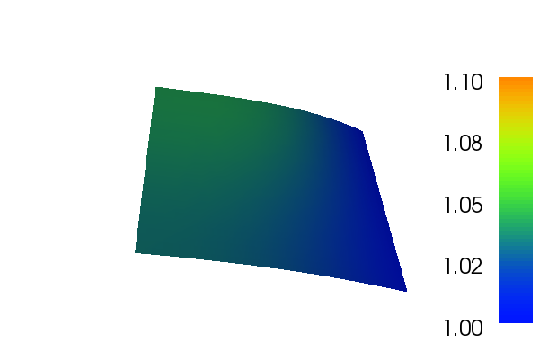
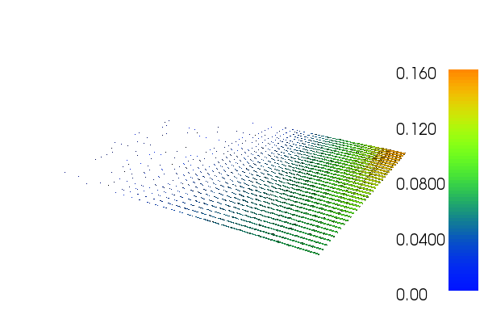

Nonlinear Poisson equation¶
This demo is implemented in a single Python file,
demo_nonlinear-poisson.py, which contains both the
variational form and the solver.
This demo illustrates how to:
Solve a nonlinear partial differential equation (in this case a nonlinear variant of Poisson’s equation)
Create and apply Dirichlet boundary conditions
Define an
ExpressionDefine a
FunctionSpaceCreate a
SubDomain
The solution for \(u\) in this demo will look as follows:
{kind=link}
and the gradient of \(u\) will look like this:
{kind=link}
Equation and problem definition¶
For a domain \(\Omega \subset \mathbb{R}^N\) with boundary \(\partial \Omega = \Gamma_{D} \cup \Gamma_{N}\), we consider the following nonlinear Poisson equation with given boundary conditions:
Here \(f\) is input data and \(n\) denotes the outward directed boundary normal. The nonlinear variational form can be written in the following canonical form: find \(u \in V\) such that
Here \(F:V\times\hat{V}\rightarrow\mathbb{R}\) is a semilinear form, linear in the argument subsequent to the semicolon, and \(V\) is some suitable function space. The semilinear form is defined as follows:
To solve the nonlinear system \(b(U) = 0\) by Newton’s method we compute the Jacobian \(A = b'\), where \(U\) is the coefficients of the linear combination in the finite element solution \(u_h = \sum_{j=1}^{N}U_j\phi_j, \; b:\mathbb{R}^N\rightarrow\mathbb{R}^N\) and
Linearizing the semilinear form \(F\) around \(u = u_h\), we obtain
We note that for each fixed \(u_h\), \(a = F'(u_h;\,\cdot\,,\,\cdot\,)\) is a bilinear form and \(L = F(u_h;\,\cdot\,,\,\cdot\,)\) is a linear form. In each Newton iteration, we thus solve a linear variational problem of the canonical form: find \(\delta u \in V_{h,0}\) such that
In this demo, we shall consider the following definitions of the input function, the domain, and the boundaries:
\(\Omega = [0,1] \times [0,1]\,\,\,\) (a unit square)
\(\Gamma_{D} = \{(1, y) \subset \partial \Omega\}\,\,\,\) (Dirichlet boundary)
\(\Gamma_{N} = \{(x, 0) \cup (x, 1) \cup (0, y) \subset \partial \Omega\}\,\,\,\) (Neumann boundary)
\(f(x, y) = x\sin(y)\,\,\,\) (source term)
Implementation¶
This description goes through the implementation (in
demo_nonlinear-poisson.py) of a solver for the above
described nonlinear Poisson equation step-by-step.
First, the matplotlib and dolfin modules are imported:
import matplotlib.pyplot as plt
from dolfin import *
Next, we want to consider the Dirichlet boundary condition. A simple Python function, returning a boolean, can be used to define the subdomain for the Dirichlet boundary condition (\(\Gamma_D\)). The function should return True for those points inside the subdomain and False for the points outside. In our case, we want to say that the points \((x, y)\) such that \(x = 1\) are inside on the inside of \(\Gamma_D\). (Note that because of rounding-off errors, it is often wise to instead specify \(|x - 1| < \epsilon\), where \(\epsilon\) is a small number (such as machine precision).):
# Sub domain for Dirichlet boundary condition
class DirichletBoundary(SubDomain):
def inside(self, x, on_boundary):
return abs(x[0] - 1.0) < DOLFIN_EPS and on_boundary
We then define a mesh of the domain and a finite element function
space V relative to this mesh. We use the built-in mesh provided by
the class UnitSquareMesh. In order to create a mesh
consisting of \(32 \times 32\) squares with each square divided
into two triangles, we do as follows:
# Create mesh and define function space
mesh = UnitSquareMesh(32, 32)
File("mesh.pvd") << mesh
V = FunctionSpace(mesh, "CG", 1)
The second argument to FunctionSpace is the finite element family,
while the third argument specifies the polynomial degree. Thus, in
this case, we use ‘CG’, for Continuous Galerkin, as a synonym for
‘Lagrange’. With degree 1, we simply get the standard linear Lagrange
element, which is a triangle with nodes at the three vertices (or in
other words, continuous piecewise linear polynomials).
The Dirichlet boundary condition can be created using the class
DirichletBC. A
DirichletBC takes three
arguments: the function space the boundary condition applies to, the
value of the boundary condition, and the part of the boundary on which
the condition applies. In our example, the function space is V, the
value of the boundary condition (1.0) can be represented using a
Constant and the Dirichlet boundary is defined above. The definition
of the Dirichlet boundary condition then looks as follows:
# Define boundary condition
g = Constant(1.0)
bc = DirichletBC(V, g, DirichletBoundary())
Next, we want to express the variational problem. First, we need to
specify the function u which represents the solution. Upon
initialization, it is simply set to the zero function, which will
represent the initial guess \(u_0\). A Function represents a function living in a
finite element function space. The test function \(v\) is
specified, also living in the function space \(V\). We do this by
defining a Function and a
TestFunction on
the previously defined FunctionSpace V.
Further, the source \(f\) is involved in the variational forms,
and hence we must specify this. We have \(f\) given by a simple
mathematical formula, which can be easily declared using the
Expression class. Note
that the strings defining f use C++ syntax since, for efficiency,
DOLFIN will generate and compile C++ code for this expression at
run-time.
By defining the function in this step and omitting the trial function we tell FEniCS that the problem is nonlinear. With these ingredients, we can write down the semilinear form F (using UFL operators). In summary, this reads:
# Define variational problem
u = Function(V)
v = TestFunction(V)
f = Expression("x[0]*sin(x[1])", degree=2)
F = inner((1 + u**2)*grad(u), grad(v))*dx - f*v*dx
Now, we have specified the variational forms and can consider the solution of the variational problem. Next, we can call the solve function with the arguments F == 0, u, bc and solver parameters as follows:
# Compute solution
solve(F == 0, u, bc,
solver_parameters={"newton_solver":{"relative_tolerance":1e-6}})
The Newton procedure is considered to have converged when the residual \(r_n\) at iteration \(n\) is less than the absolute tolerance or the relative residual \(\frac{r_n}{r_0}\) is less than the relative tolerance.
A Function can be
manipulated in various ways, in particular, it can be plotted and
saved to file. Here, we output the solution to a VTK file (using the
suffix .pvd) for later visualization and also plot it using the plot
command:
# Plot solution and solution gradient
plt.figure()
plot(u, title="Solution")
plt.figure()
plot(grad(u), title="Solution gradient")
plt.show()
# Save solution in VTK format
file = File("nonlinear_poisson.pvd")
file << u